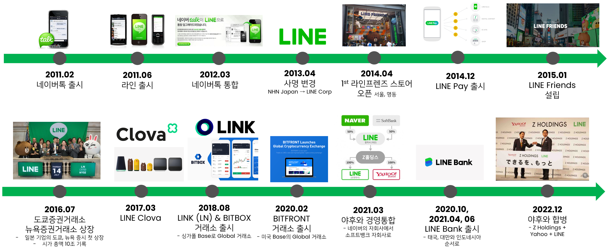
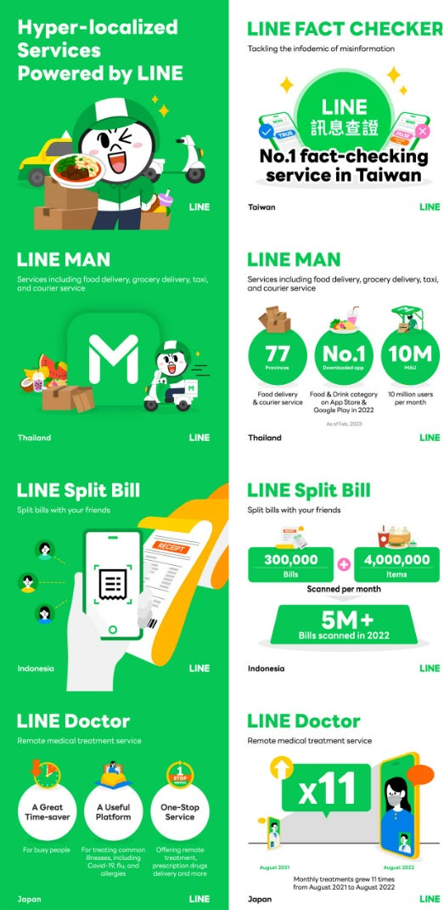
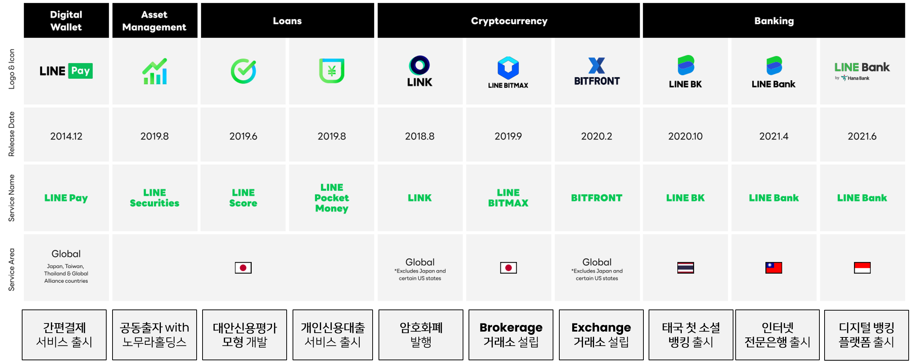
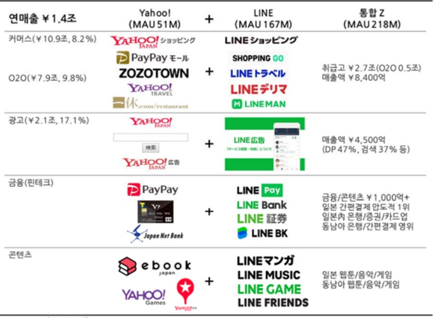

1억 가입자 달성에 트위터는 49개월, 페이스북은 54개월이 걸렸지만 LINE은 19개월 만에 해냈다. 2011년 2월 출시된 네이버톡의 실패 후 같은 해 6월 일본에서 출시된 LINE은 5년 만인 2016년 7월 도쿄·뉴욕 증권거래소에 동시 상장하며 시가총액 10조 원을 기록했고, 2022년 말 기준 2억 명의 MAU를 보유한 슈퍼앱으로 자리매김했다. 본 연구는 플랫폼 이론을 바탕으로 최초 진입자 이점, 네트워크 효과와 락인, 서비스 컨셉 혁신, 플랫폼 흡수, 그리고 Hyper-localization의 관점에서 LINE의 성장 단계를 분석한다.
- LINE은 1억 가입자 달성에 트위터가 49개월, 페이스북이 54개월 걸린 것과 달리 19개월 만에 도달하며 폭발적인 성장을 이루어낸 앱이다.
- LINE은 메시징 앱을 넘어 생태계 확장을 통해 지속적으로 새로운 가치를 창출해내고 있다.
- 본 연구는 LINE을 플랫폼 이론을 바탕으로 최초 진입자 이점, 서비스 혁신 이론, 네트워크 효과와 플랫폼 흡수, 그리고 Hyper-localization의 사례와 함께 성장단계별로 분석한다.
1. 서론: 연구배경 및 산업 분석
글로벌 모바일 메신저 시장은 지역별로 강자가 다르다. 2021년 기준 33.2억 명이 메신저 앱을 사용하고 있으며, WhatsApp(24억 MAU), Facebook Messenger(21억), WeChat(13억) 등 대부분의 메신저는 메신저 앱으로만 기능하는 반면, WeChat·카카오톡·LINE 세 앱만이 메신저를 넘어 생태계로 확장했다. 연구는 이 세 앱을 '유저 확보 → 콘텐츠로 생태계 구축 → 생태계 확장'의 3단계(Phase)로 비교 분석한다. LINE은 일본, 대만과 태국 모바일 메신저 시장 점유율 1위 사업자다.
2. 이론적 배경
LINE은 단면시장에서 확보한 수요측 사용자(Demand Side User)의 직접 네트워크 효과를 기반으로, 공급측 사용자와 개발자 측면에서 비관련 기능과 보완재를 흡수함으로써 교차 네트워크 효과(Cross-sided Network Effects)를 빠른 속도로 확대한 사례다. Eisenmann 등의 분류로는 Transaction Platform에 속한다. 연구는 LINE의 혁신 과정을 네 가지 이론 — ① Lieberman & Montgomery(1988)의 최초 진입자 이점, ② Metcalfe의 법칙과 Kaplan & Norton의 Lock-in 전략(경쟁사로 전환하는 장벽을 높여 고객을 잠근다), ③ Den Hertog 등의 Service Concept Innovation, ④ Eisenmann 등의 Platform Envelopment(축적된 플랫폼 기능과 장점을 활용해 다른 플랫폼을 흡수하며 확장) — 의 관점에서 분석한다.
3. LINE 사례 연구
3.1 LINE 개요
LINE의 글로벌 MAU는 198백만 명으로 일본 95M, 태국 54M, 대만 22M, 인도네시아 6M, 나머지 21M으로 구성된다. 2011년 6월 출시 후 2011년 8월 동일본 대지진 당시 끊기지 않는 커뮤니케이션 수단으로 폭발적인 성장을 시작했고, 2012년 3월 네이버톡을 라인으로 통합했다. 이후 LINE Pay 출시(2014.12), 도쿄·뉴욕 동시 상장(2016.07), 암호화폐 LINK 발행(2018.08), 야후와의 경영통합(2021.03)을 거쳐 2022년 12월 Z Holdings·Yahoo·LINE이 LY Corporation으로 합병을 선언했다.

3.2 Phase 1: 도입기 — First Mover Advantage
LINE 이전에 네이버의 일본 시장 도전은 이미 10년의 실패를 겪었다. 2000년 11월 네이버재팬을 설립해 검색 사업을 전개했지만 야후의 아성은커녕 구글조차 이길 수 없었고, 2005년 8월 검색 서비스를 중단했다. 2006년 검색엔진 업체 '첫눈'을 인수해 재도전했고, 2011년 2월 카카오톡을 견제하기 위해 출시한 네이버톡은 카페·미투데이·블로그 등 기존 서비스와의 연동을 지원했으나 이용자 확장이 제한적이었다. 2011년 3월 동일본 대지진을 계기로 모바일 메신저로 방향성을 변경한 LINE은 네이버톡의 복잡한 기능을 모두 제거하고 실시간 메시지, 그룹 채팅 등 철저히 의사소통에만 초점을 맞췄다.
카카오톡과 WhatsApp이 아직 일본에 상륙하지 않았던, 별다른 경쟁자가 없던 시기에 재빨리 시장에 진입했고, 일본의 스마트폰 보급률이 2011년 9%에서 2016년 84%까지 성장하던 시기와 맞물려 폭발적으로 성장했다. 2011년 10월 4일 LINE 1.3.0 버전부터 제공된 Free Call(VoIP)은 주요 경쟁사 대비 가장 먼저 출시된 것으로 기술적 우위를 보여줬고, 이때부터 유저 수가 폭발적으로 성장하기 시작했다.
또 하나의 축은 스티커(Sticker)다. 2014년 5월 출시된 라인 크리에이터스 마켓은 전세계 라인 이용자가 직접 스티커를 만들어 판매할 수 있는 모바일 플랫폼으로, 판매금액의 50%가 창작자의 몫으로 돌아갔고 관련 매출이 출시 1달 만에 17억 원에 달했다. 유저가 직접 스티커를 판매하는 Supplier가 되고, Supplier가 되기 위해 User가 되어야 하는 전략으로 신규 유저 확보의 기반이 됐다. Service Concept Innovation을 통해 텍스트 중심 커뮤니케이션에서 스티커 중심 커뮤니케이션으로 축을 변화시킨 것이다.
3.3 Phase 2: 성장기 — 메시징 앱을 넘어서 생태계 구축
LINE은 메시징 앱을 넘어 광고, 콘텐츠, 커머스, 핀테크, AI/Healthcare까지 포함한 앱으로 거듭났다. 이 성장기의 핵심이 Hyper-localization이다. 일본, 태국, 대만의 라인 메신저를 켰을 때 유저는 모두 다른 UX와 UI를 경험한다. Hyper-localization은 국가 또는 지역 내에서 독특한 지역 특정 소비자 세그먼트나 서브컬처를 식별·이해·타겟팅한 뒤 제품/서비스와 비즈니스 모델을 지역화하는 접근법(Singh & Keating, 2018)으로, LINE의 스티커는 대만의 음력 새해 스티커, 태국의 불교 문화 스티커처럼 현지 문화에 맞게 출시되며, 현지 자회사의 대표도 현지에서 선정해 운영한다.
대만은 인구의 약 90%가 LINE을 사용하는, LINE이 배포된 모든 지역 중 가장 널리 퍼진 시장이다. 사용자당 스티커 세트가 1년에 18개로 일본의 약 2배이며, 현지 LINE Sticker Creator 누적 수는 77만 명, 만들어진 스티커 세트는 900만 개에 이른다. 2019년 7월 출시된 LINE Fact Checker는 성공적인 Hyper-localization의 예시다. 외국 정부발 거짓 정보 확산 대상 지역으로 9년 연속 기록된 대만에서, 문장이나 링크의 진위를 LINE 공식 계정으로 보내 확인할 수 있는 이 서비스는 2021년 말까지 55만 명 이상의 사용자를 얻었고, 팩트체크된 26,878개 메시지 중 82%가 가짜로 판명됐다.
태국은 인구의 약 80%가 LINE 사용자다. 2016년 4월 출시된 온디맨드 어시스턴트 앱 LINE MAN은 식품 배달, 식료품 배달, 특급 우편, 택시 호출을 운영하며 교통 체증이 잦은 태국의 일상 문제를 해결했다. 2020년 9월 레스토랑 검색 플랫폼 Wongnai와 합병한 LINE MAN Wongnai는 2020년 1~8월 월간 주문 수가 15배 이상 증가했고, 2022년 9월 시리즈 B 펀딩에서 2억 6,500만 달러를 유치하며 기업가치 10억 달러를 넘겼다. 방콕 대중교통(BTS)의 Rabbit 그룹과 제휴한 Rabbit LINE Pay도 태국의 '현금 없는 사회' 혁신을 이끌고 있다.

성장기의 마지막 퍼즐은 IPO였다. 2016년 7월 15일 도쿄 증권거래소와 뉴욕 증권거래소에 동시 상장해 약 1조 3천억 원 규모의 자금을 조달했는데, 이는 2016년 미국에서 발생한 IPO 중 가장 큰 규모이자 테크 섹터에서는 2014년 알리바바 IPO 이후 최대였다. 네이버는 해외 자회사를 독자적인 서비스 플랫폼과 비즈니스 모델을 갖춘 규모로 키워 주요 증시 두 곳에 동시 상장시킨 국내 최초 기업이 됐다. IPO 재원 중 30%에 가까운 3,900억 원가량을 '타법인 증권 취득자금'으로 설정해 공격적인 해외 진출과 기업 인수를 예고했다.
3.4 Phase 3: 확장기 — 핀테크, 블록체인, 그리고 플랫폼 흡수
확장기의 LINE은 '내 손 안의 금융'이라는 키워드로 금융 서비스까지 생태계를 확장했다. 통신·전자상거래·SNS 등 LINE이 보유한 비금융데이터를 활용해 신용도를 측정하는 대안 신용평가 모형으로, 금융 거래 이력이 부족한 국가에서도 고객 신용을 정교하고 폭넓게 평가할 수 있게 했고, 이를 바탕으로 메신저 연계형 모바일 뱅킹 플랫폼인 '소셜 뱅킹'을 출시했다.

간편결제 LINE Pay는 대만 1위, 태국 2위 사업자로 성장했고 일본에서는 PayPay와의 합병으로 시너지를 모색 중이다. 인터넷 전문은행 LINE Bank는 은행 사용률이 낮은 동남아 국가를 중심으로 디지털 뱅킹으로 바로 립프로깅(leap frogging)하고 있다. 2022년 3월 기준 글로벌 사용자 570만 명을 달성했으며 고객의 75%가 20~39세 연령층이다. 대만에서는 별도 앱 설치 없이 라인 메신저로 송금·체크카드·예금·대출이 가능해 출시 1년 만에 시중 체크카드 거래액·거래량 모두 1위를 차지했고, 태국은 390만 명의 사용자와 450만 개의 은행 계좌, 인도네시아는 하나은행의 금융 노하우와 결합해 1년 만에 가입자 50만 명을 넘어섰다.
블록체인 분야에서는 2018년 8월 유틸리티 토큰 LINK를 발행하고 LINE Blockchain을 통한 토큰 이코노미를 생성했다. 이후 'Finschia'로 개편된 토큰 이코노미 2.0은 발행 한도 최대 10억 개, 초기 15%에서 점진적으로 5%로 낮아지는 인플레이션율, 재단이 사전 발행 물량을 보유하지 않는 Zero Reserve 정책을 채택했다. 독자 개발한 합의 알고리즘 Ostracon을 적용한 Finschia 메인넷은 이더리움 대비 속도가 400배 빠르고 가스비를 98% 절감할 수 있으며, NFT 마켓플레이스 DOSI와 LINE NFT로 NFT 시장에서도 성장 중이다.
마지막 확장 축은 플랫폼 흡수다. 야후와의 경영통합으로 라인과 야후를 합치면 일본 인구의 100%를 커버하는 최초 플랫폼으로 거듭나며, 금융·광고 위에 야후가 잘하는 커머스와 라인이 잘하는 콘텐츠가 보완재 역할을 한다. 2019년 라인의 손실이 컸던 가장 큰 이유는 LINE Pay의 공격적인 마케팅이었고, 야후 재팬 역시 PayPay로 LINE Pay를 견제하기 위해 막대한 현금성 보상을 지급하며 손익이 악화됐던 만큼, 두 법인의 경영통합은 Pay·은행·카드·보험/운용의 사업 통합과 ID 통합만으로도 큰 시너지가 기대된다.

4. 한계 및 결론
라인은 최근 수익성 낮은 서비스를 정리 중이다. 2022년 10월 음성인식 기반 AI 사업(클로바 서비스)을 종료했고, 2023년 5월에는 라인아웃(VoIP) 통신사업을 종료했다. 메신저 내 VoIP로 충분하다는, 애플의 아이팟이 아이폰으로 들어온 것과 같은 논리다. 클로바 운영 경험으로 얻은 데이터를 기반으로 기업용 AI(SaaS)에 집중하며, 네이버가 한국어, 라인이 일본어 기반으로 '하이퍼클로바X'를 고도화하고 있으나 이미 많이 벌어진 AI 기술 격차를 줄일 수 있을지가 관건이다.
- 성장요인: 경쟁자가 없던 시기의 빠른 진입과 스마트폰 보급 확산의 시기적 결합(First Mover Advantage), VoIP 최초 출시와 스티커라는 서비스 컨셉 혁신, 그리고 네트워크 효과를 통한 락인이 19개월 만의 1억 가입자라는 폭발적 성장을 만들었다.
- 생태계 확장 전략: 지역별로 완전히 다른 앱을 만드는 Hyper-localization으로 일본·대만·태국의 국민 메신저가 됐고, 핀테크 중심의 서비스 확장과 야후와의 경영통합(플랫폼 흡수)으로 슈퍼앱 생태계를 완성해가고 있다.
- 남은 과제: AI 방향성이 아직 뚜렷하지 않은 가운데 하이퍼클로바X 기반 서비스의 차별화 여부, 그리고 데이터 양 증가에 따른 데이터 거버넌스 — 축적된 데이터가 네트워크 효과를 극대화해 라인·야후 생태계에 기여할 수 있을지, 데이터 처리의 효율성과 보안 신뢰성에 대한 유저의 기대를 저버리지 않을지가 관건이다.